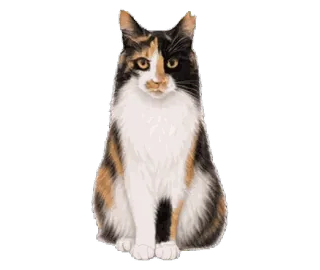
写真から、スタンプまで
お写真をもとに描いて、
似顔絵で確かめてから動かす
お写真をもとに、その子らしさを大切に描きます。ただし、まったく同じ姿の再現は難しく、しっぽの形や長さ、細かな毛柄などが異なる場合があります。まず似顔絵をお見せし、ご確認・ご了承いただいてから、動画・動くスタンプの制作に進みます。

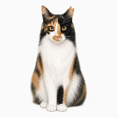
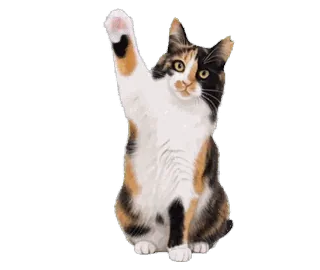
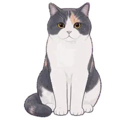
ねこしっぽ堂お写真をもとに、その子らしさを大切に描きます。動きは候補から選べます。
公式LINEで相談・注文するご注文前のご相談も、公式LINEでどうぞ。
モニター募集も公式LINEでお知らせします。
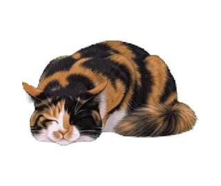
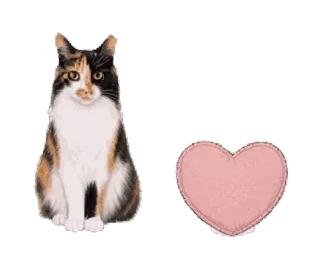
写真から、スタンプまで
お写真をもとに、その子らしさを大切に描きます。ただし、まったく同じ姿の再現は難しく、しっぽの形や長さ、細かな毛柄などが異なる場合があります。まず似顔絵をお見せし、ご確認・ご了承いただいてから、動画・動くスタンプの制作に進みます。


市販のスタンプは好き。でも、自分の猫とは柄が違う。
かわいい猫スタンプはたくさんあります。でも、毎日のやりとりで使いたいのは、やっぱり自分の猫。頼んでみたい気持ちはあっても、分からないことが多くて止まってしまいがちです。
動きをえらぶ
動きを一から考える必要はありません。動きは、ねこしっぽ堂が作った40〜60個ほどの候補から、使いたい24個と、メインにする1つを選んでいただきます。選んだ結果はサーバーに送られず、内容をコピーして公式LINEのトークに貼るだけです。
候補にない動きは、2個までリクエストいただけます（プランの料金に含みます）。3個目からは1個1,000円です。動きをすべて一からお作りするご注文は、お受けしていません。

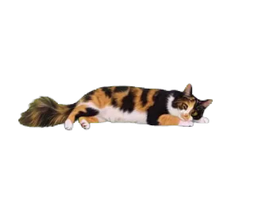
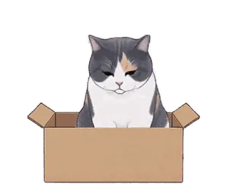
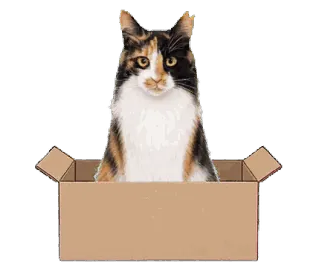
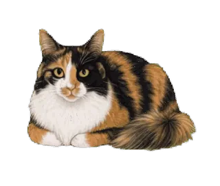
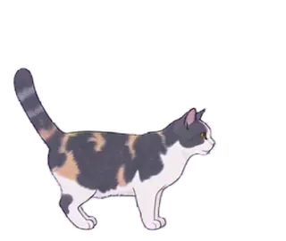
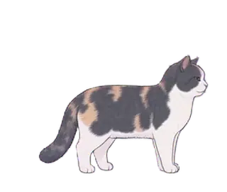
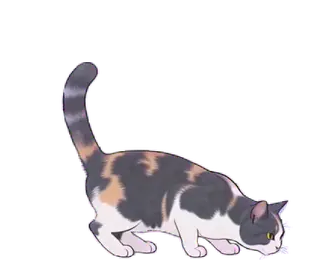
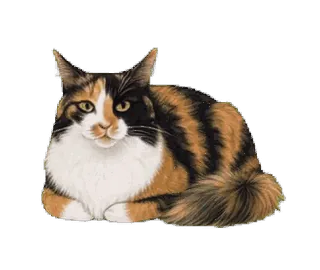
頼んでから届くまで
正面・横・全身の3枚以上
修正は3回まで基本料金に含みます。ご確認・ご了承後に動きの制作へ
40〜60個ほどの候補から、24個とメイン1つ
選んでから10日以内に申請し、LINEの審査のあとにお届け
プラン
9,800円
24,800円
選び切れなかった子は、追加セットにもできます（5,980円〜）。完成したスタンプを使う際は、制作費とは別にLINE STOREで1セット250円の購入が必要です。追加セットもそれぞれ購入が必要です。
よくあるご質問
その子らしさを大切に描きますが、お写真とまったく同じ姿の再現は難しく、しっぽの形や長さ、細かな毛柄などが異なる場合があります。似顔絵をご確認・ご了承いただいてから、動画・動くスタンプの制作に進みます。
似顔絵の修正は3回まで基本料金に含みます。4回目以降は1回につき100円で、追加修正料は後払いです。追加の修正に進む前に、内容と料金をご案内します。似顔絵をご確認・ご了承いただいてから動画・動くスタンプの制作に進み、動きの制作開始後は似顔絵の変更はお受けできません。
ご注文でいただいたお写真はスタンプづくりにだけ使い、写真そのものは公開しません。
「おうち専用」（専用プラン）なら、LINE STORE/ショップ非公開で購入URLをお渡しし、ストアにもSNSにも出しません。
動きは、ねこしっぽ堂が作った候補の中から選んでいただきます。候補にない動きは2個までリクエストいただけます（プランの料金に含みます）。3個目からは1個1,000円です。動きをすべて一からお作りするご注文は、お受けしていません。
「LINEストアでデビュー」（公開プラン）のスタンプは、ねこしっぽ堂の名前でLINEストアに並べます。ストアでの売上は、ねこしっぽ堂の収益になります。
いまは猫だけが対象です。